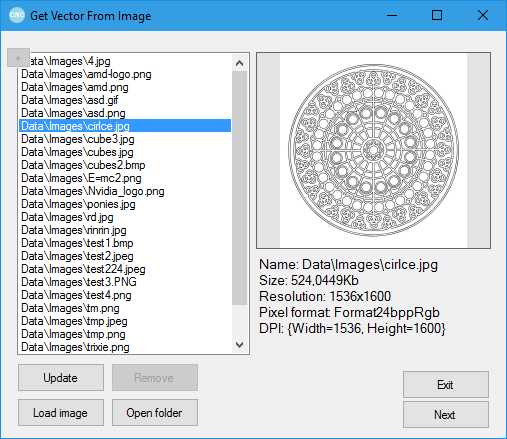
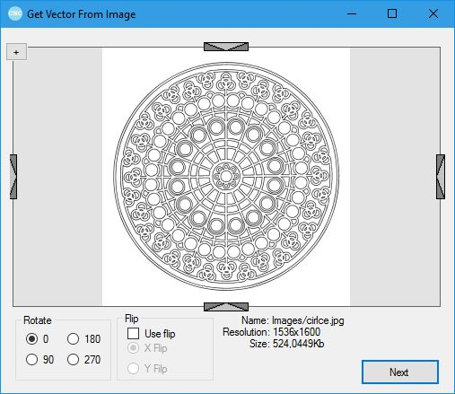
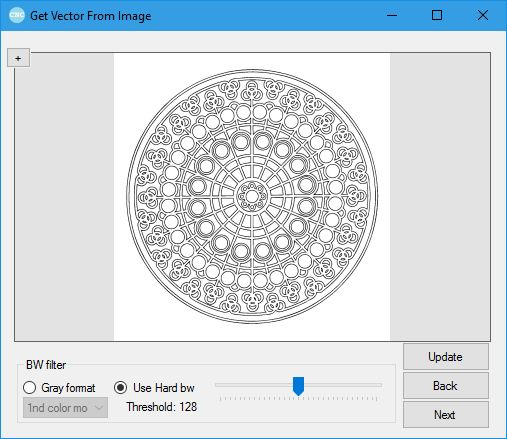
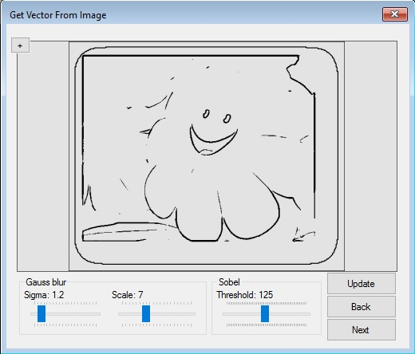
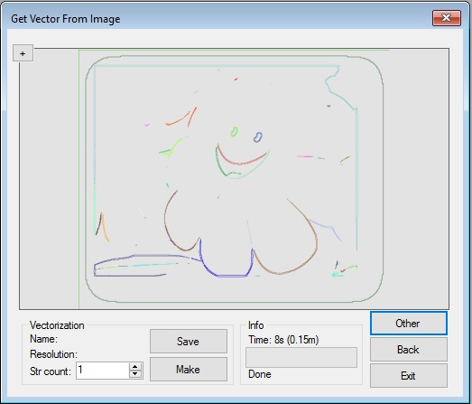

Веторизация
Данная функция является удобным мастером в котором вам пошагово предстоит выполнять операции над изображением. Результатом преображения станет вектор в формате .CVF . Кнопка Back возвращает программу на предидущий этап, когда Next переходит на следующий. При нажатии на плюсик в верхнем углу окна, октроется увеличенный просмотр конкретного этапа процесса.
Первый этап

Вид окна первого этапа векторизации
На первом этапе векторизации вам предстоит выбрать изображение с которым вы хотите работать. В списке представленны изображения с папки Data\Images . Где:
Update - обновляет список;Load Image - открывает окно открытия изображения;Open Folder - открывает выше упомянутую папку;Remove - удаляет выделенное изображение.
На экране вы сможете увидеть препросмотр изображения и некоторые его параметры
Второй этап

Вид окна второго этапа векторизации
На данном этапе вы сможете:
Повернуть изображение на 90, 180, 270 градусов во вкладке Rotate ;Отразить изображение по горизонтали или вертикали во вкладке Flip ;Обрезать изображение двигая бегунки на изображении.
Третий этап

Вид окна третьего этапа векторизации
На данном этапе перед вами стоит выбор. Если изображение монотонное, контрастное, с четкими границами между 2,3 цветами то выбирайте Use Hard Bw , и выбрав Threshold такой, чтобы изображение было четко видно переходите далее. Иначе выбирайте Gray Format и переходите далее.
Третий (промежуточный) этап

Вид окна промежуточного этапа векторизации
Если вы выбрали 2й вариант, то вы перейдете к данному этапу. Здесь ваша задачи выделить границы, которые были не видны изначально.
Simga размытия по Гаусу - главный параметр отвечая за "Силу" размытие алгоритма.Scal е - параметр масштабирования матрицы размытия; фактически не влияет на результат. Дает эффект "резкости" исходного изображения.Threshold - граница разности контраста, на который будет реагировать оператор Собеля. Основной параметр операции.
Приоритет действий таков: Размытие => Оператор Собеля.
Некоторые рекомендации по установке параметров:
Если алгоритм "не видит" деталей изображения повышайте Threshold пока не станет видно всех малых деталей изображения.
Если алгоритм сильно реагирует на шум изображения - результат не четкий, содержит много лишних вещей, повышайте Sigma , пока не результат не станет более четким (перестанет содержать лишних вещей).
Если вы хотите сделать "видимые" линии более широкими повысьте Sigma , а для утолщения уменьшите.
Попробуйте различные вариации параметров, не зацикливайтесь на определенном и выберите самый красивый.
Scale рекомендуется не менять.
Четвертый этап

Вид окна финального этапа векторизации
Для начала непосредственно самой векторизации выберите количество потоков выполнения в поле Str Count (рекомендуемо 1, но это займет уйму времени) и нажимайте кнопку Make . После окончания процесса вы можете сохранить результат, нажав на Save , отобразить или напечатать кнопками Show и Print соответственно во вкладке Other соответственно